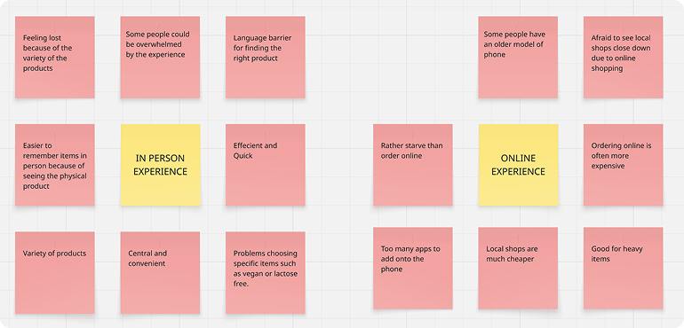
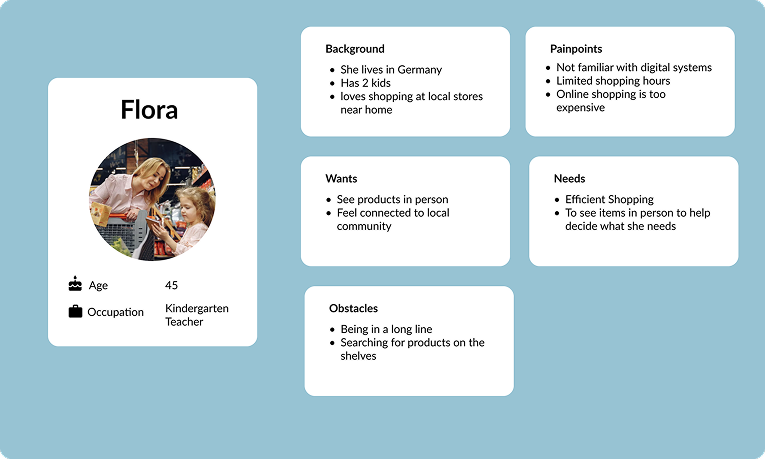
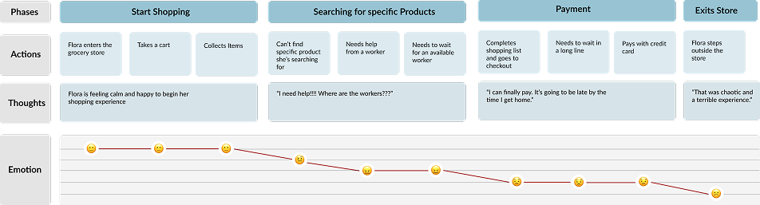
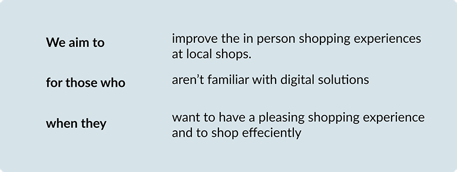
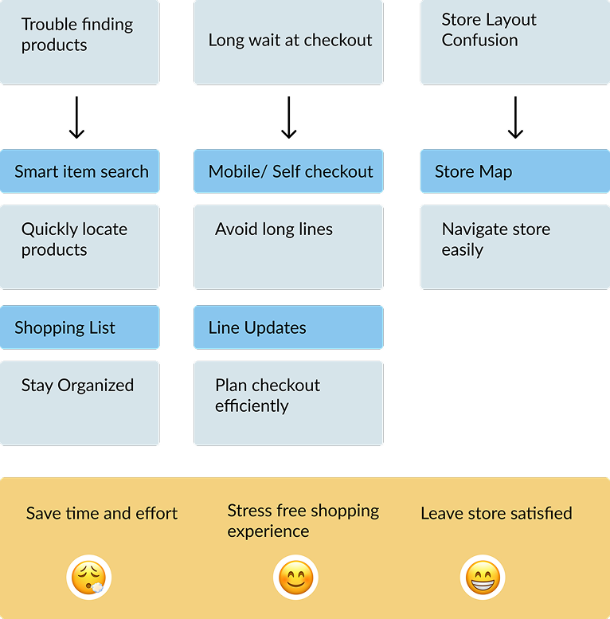
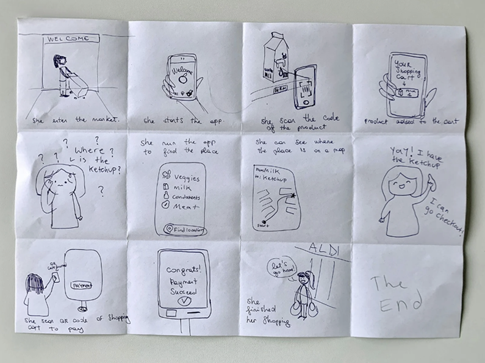

Overview
To what extent can digitalizing the in-person grocery shopping experience improve customer behavior and satisfaction? In this short project we used Aldi shoppers as the main target audience. As a starting basis, I asked customers shopping if they like shopping in person or digitally and why.
Overall Aldi customers love and prefer shopping in person because:
Persona
For this project, we created a persona to better understand the potential impact of digitalizing the in-person grocery shopping experience on customer behavior and satisfaction.
Flora really likes local stores and wants to shop in person, not with delivery services. She’s also not familiar with digital systems, so she isn’t very open-minded about online payment and sharing her card information.
Experience Mapping
We organized and created a user journey map based on the persona. This map details the user’s experience at each step. Through the user journey map, we can identify the user's pain points.
Turning User Pain Points into App Solutions
We used these user pain points as our insights to develop the design goal.
Design Goals
Ultimately, the solution should be a mixture of digitalisation and reality.
Storyboarding
To help visualize the user’s journey further, we thought a storyboard would be useful to help keep us on track.
Paper Prototype
We created a paper prototype because it allowed us to do quick iterations and early user testing.
Takeaways
Through this project I learned a lot about the UX process. I really enjoyed researching, interviewing people, and creating an experience based on real user feedback. Along with learning more in depth about the UX process, I also gained experience managing a team and collaborating with programmers. Since we were a small team with a limited skill set, I learned new skills as needed — such as 3D modeling. However, our limited skills prevented us from creating a more unique experience. I wish we could’ve made a better AR experience.